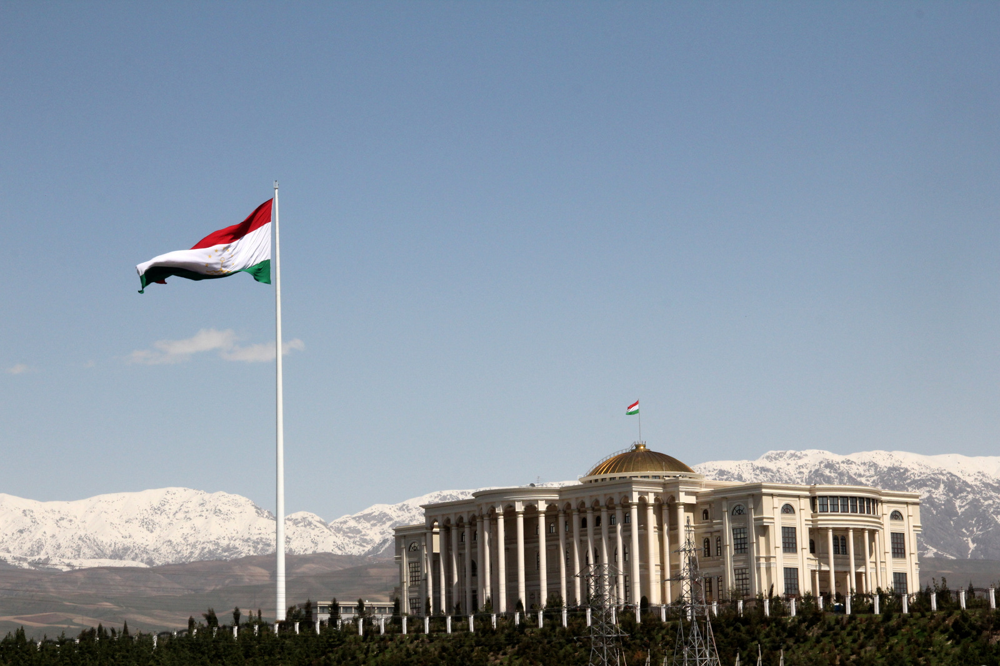
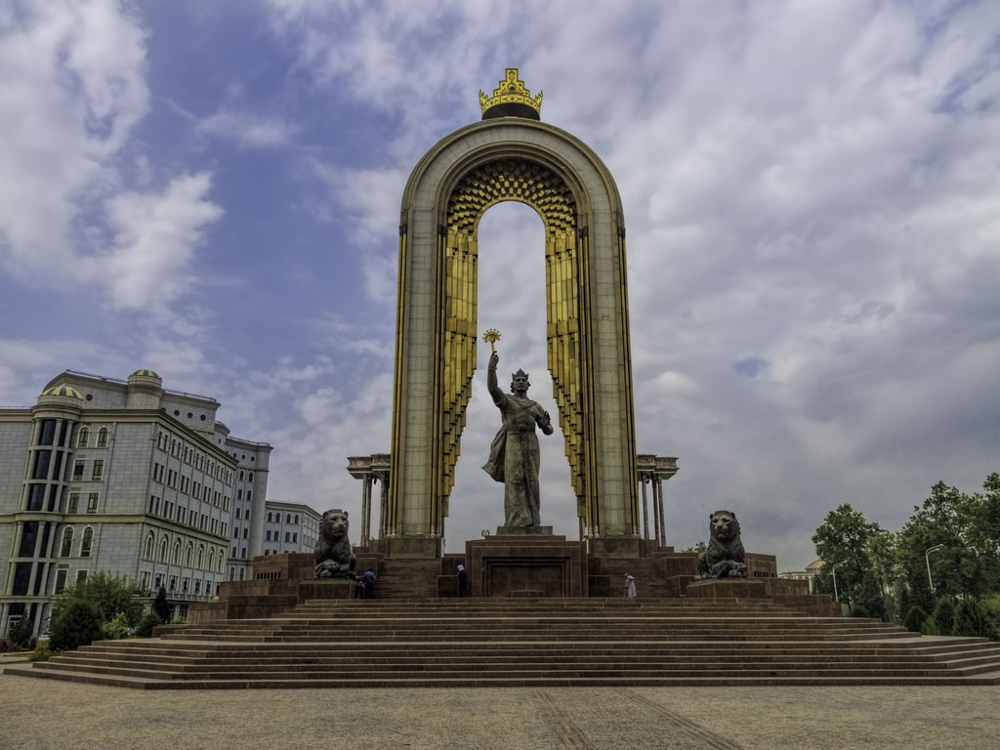

Tajikistan, officially Republic of Tajikistan. Tajikistan also spelled Tadzhikistan, country lying in the heart of Central Asia. It is bordered by Kyrgyzstan on the north, China on the east, Afghanistan on the south, and Uzbekistan on the west and northwest. Tajikistan includes the Gorno-Badakhshan (“Mountain Badakhshan”) autonomous region, with its capital at Khorugh. Tajikistan encompasses the smallest amount of land among the five Central Asian states, but in terms of elevation it surpasses them all, enclosing more and higher mountains than any other country in the region
Do you want to visit this historical country?
Let's Start  